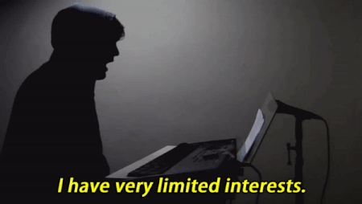

Todd Nathanson (a.k.a Todd In The Shadows) being brutally honest.
Here's a time line of Todd In The Shadows' life:
- - Born on June 3rd
- - Creates Youtube account
- - A broken car antenna forces him to listen to pop music on the radio and eventually get into pop music
- - Joins That Guy With The Glasses (TGWTG) (known today as Channel Awesome)
- - Releases the first episode of One Hit Wonderland, a series of retrospectives looking at "one-hit wonders" of the past
- - Starts Cinemadonna, a film-by-film retrrospective of Madonna's acting career
- - Kicks off Trainwreckords, a documentary/review series focused on career-reviewing albums from various artists
- - Parts Ways with Channel Awesome
- - Gets interviewed by Billboard magazine